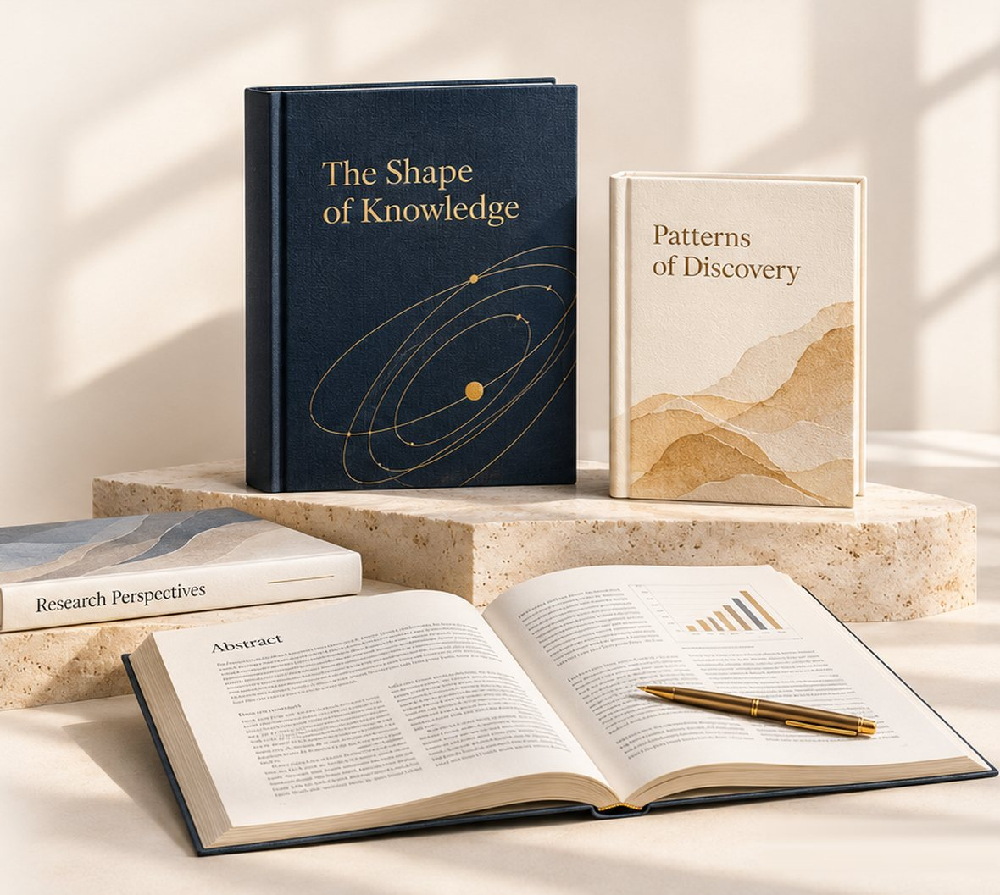
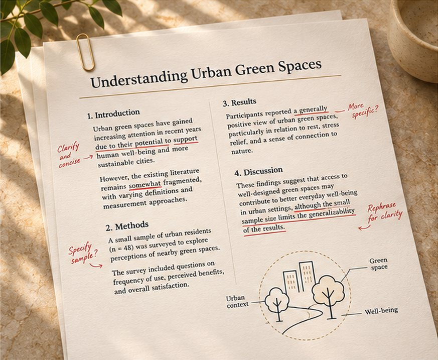

01
Manuscript Editing
Strengthen language, structure, and clarity while preserving your meaning and voice.
Explore EditingSpecialist support for scholarly work
Thoughtful editing, publication guidance, and research communication, helping you present your work with clarity and confidence.

Illustrative publications
Subject-aware expertise
Confidential manuscript handling
Transparent scope and pricing
Respect for author ownership
We work with researchers to strengthen how their ideas are expressed, prepared, and shared. Our approach combines editorial precision with an understanding of the care and effort behind scholarly work.
Discover Our ApproachOur expertise
01
Strengthen language, structure, and clarity while preserving your meaning and voice.
Explore Editing02
Identify suitable journals and prepare a complete, carefully organised submission.
Explore Publication Support03
Turn complex findings into clear visuals, abstracts, and materials that help audiences understand your work.
Explore Research CommunicationYour next chapter
Choose the situation closest to yours, and we’ll point you to the right kind of support.
Get help understanding the preparation and submission process.
Improve language, organisation, and presentation.
Explore suitable options based on your subject and manuscript.
Organise revisions and prepare a clear response.
Illustrative portfolio
A closer look at manuscript presentation, journal design, and research communication.
Illustrative examples. Published client work is shown only with the author’s permission.
Start a projectIllustrative case study

Before
Due to the fact that the sample was small, the findings should be interpreted with caution.
After
Because the sample was small, the findings should be interpreted with caution.
Original illustrative editing sample
A complex draft needed clearer language and a more coherent structure.
Refined sentences, clarified transitions, and aligned terminology while preserving the author’s meaning.
An edited manuscript, tracked changes, and an editorial summary.
A manuscript that reads clearly from abstract to conclusion and is ready for the author’s chosen journal.
Why choose us
Your manuscript is considered in the context of its subject and intended audience.
Understand what is included, what you will receive, and how the work will progress.
Your ideas, meaning, and authorship remain central throughout the process.
Know the next step and where to turn when you have questions, with support available around the clock.
Our process
Tell us about your manuscript, research field, and timeline.
Review the recommended support, deliverables, and pricing.
Your manuscript receives focused attention, with questions clarified along the way.
Receive your materials and guidance on the next agreed step.
Journal acceptance is determined independently by journal editors and reviewers.
Research disciplines
Clinical medicine, pharmacology, nursing, public health
Computer science, data science, applied engineering
Genetics, food science, ecology, agriculture
Management, marketing, finance, statistics
Psychology, education, law, journalism
Literature, philosophy, history, languages
Additional services
Author perspectives
My manuscript was polished by their team in a very clear and well-structured manner. The advancements were also evident, and my supervisor was pleased with the quality of work.
They have rectified my language problems but have not altered the meaning of my work.
Their formatting service helped me to save time. It was all in accordance with journal requirements.
Our experience
75+
Specialist editorsPhD & Master’s qualified
300+
Subjects coveredAcross six research families
720+
Journals editedFormatting & editorial work
4.9
Average author ratingAcross review platforms
Journal requirements vary. Preparation should reflect the scope, policies, and submission guidance of the journal you choose.
Industry references
Industry references only. No affiliation or endorsement is implied.
Resources & insights
Frequently asked questions
Can’t find your answer? Our team is available around the clock.
Ask a question or message us on WhatsApp.
It depends on where you are in the process. Share your manuscript and target journal (if you have one), and a specialist will recommend the support that fits, whether that’s editing, formatting, journal selection or reviewer-response help. There’s no obligation to proceed.
Pricing reflects the service, the length and complexity of your manuscript, and your timeline. You receive a clear scope with the price before any work begins, so you know exactly what is included.
Turnaround depends on the service and manuscript length. We agree a delivery date with you in the scope, and we can discuss faster timelines when a deadline is close.
Your manuscript is shared only with the specialists working on it and is never published, reused or disclosed. You remain the sole owner of your work at every stage.
No. Editing improves how your work is expressed (language, structure and clarity) while your ideas, findings and voice stay your own. Changes are tracked so you can review every suggestion.
Yes. We review your manuscript’s subject, scope and audience, then suggest suitable indexed journals with notes on fit, requirements and timelines, so you can choose with confidence.
We stay available to answer questions about the delivered work, and revisions continue until you are satisfied with the result. We can also help you respond to reviewer comments and prepare revisions if your journal requests them.
Our revision support is designed to reduce the risk of rejection. If a journal does reject your manuscript, we go through the process again with you: reviewing the feedback, strengthening the manuscript and preparing it for another suitable journal.
No. Acceptance decisions are made independently by each journal’s editors and reviewers. Our role is to help you prepare and present your manuscript as strongly as possible; we cannot guarantee publication.
Begin the conversation
Tell us where you are in the process. We’ll help you identify the support that fits your work.